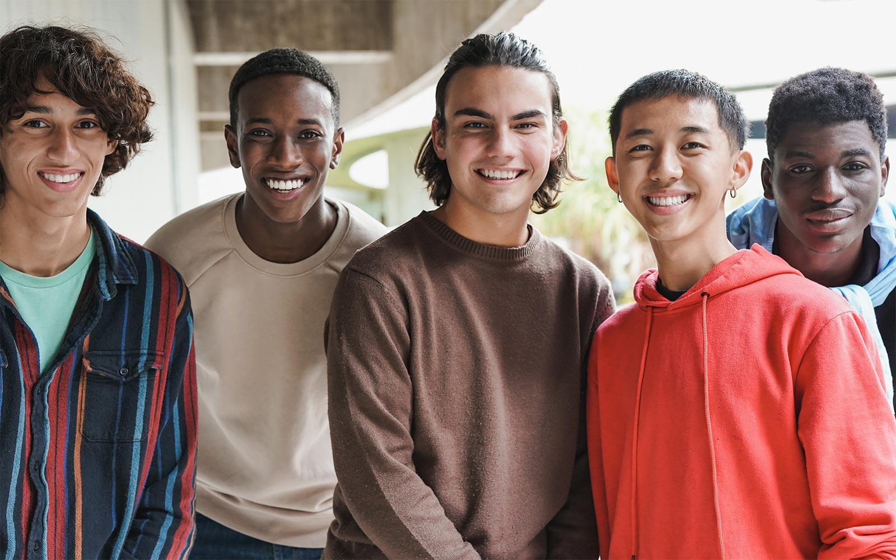

A mental health support group for young men
When: Lunchtimes, every Wednesday and Friday, beginning April 3
Where: The Lincoln High School Counseling Center
Bonus: FOOD!
Lat’s Talk is a peer support group for male-identifying students at Lincoln, offering a safe space to talk about what’s on your mind. The topics discussed will be proposed by group members (e.g., academic stress; peer and parent pressure; social anxiety; body image; relationships; etc.). Facilitated and moderated by Lincoln school counselor Dr. G, the group will draw upon the expertise of Dr. Chris Reigeluth, Professor of Clinical Psychology at Oregon Health & Science University, who specializes in the mental health of boys and men, and the ways that dominant masculine gender socialization messages can influence boys’ functioning and well-being. The primary goal is to provide a sense of belonging, validation, and understanding. So, be sure to sign up, and let’s get talking!
A few important details:
Dr. Glen Leonard—known by students as Dr. G—is a school counselor on temporary assignment at Lincoln. He is a global educator who earned his BA from the University of British Columbia, his MA from Oxford, and his PhD from the University of Cambridge. Dr. G’s doctoral research focussed on the changing depiction of masculinity in 20th century British literature. He brings a wealth of teaching experience as well as public and private counseling, including serving as a Postdoctoral Teaching Fellow and Lecturer advising students at Stanford. Dr. G is an avid skier and hiker, and when not counseling, can be found on the many slopes and trails in and around Portland.
Dr. Christopher Reigeluth is a professor in the division of clinical psychology at Oregon Health & Science University, and past fellow at the Yale Child Study Center. He is a child and adolescent psychologist who is passionate about the well-being of boys and men and greater gender awareness for all people. Dr. Chris’ research focuses on masculinities and mental health and ways that dominant masculine gender socialization messages can influence boys’ functioning and well-being. He is the author of “The Masculinity Workbook for Teens: Discover What Being a Guy Means to You.” Dr. Chris loves the outdoors, in which he and his wife, Ashley, and their children, Finn and Fern, spend a great deal of time.